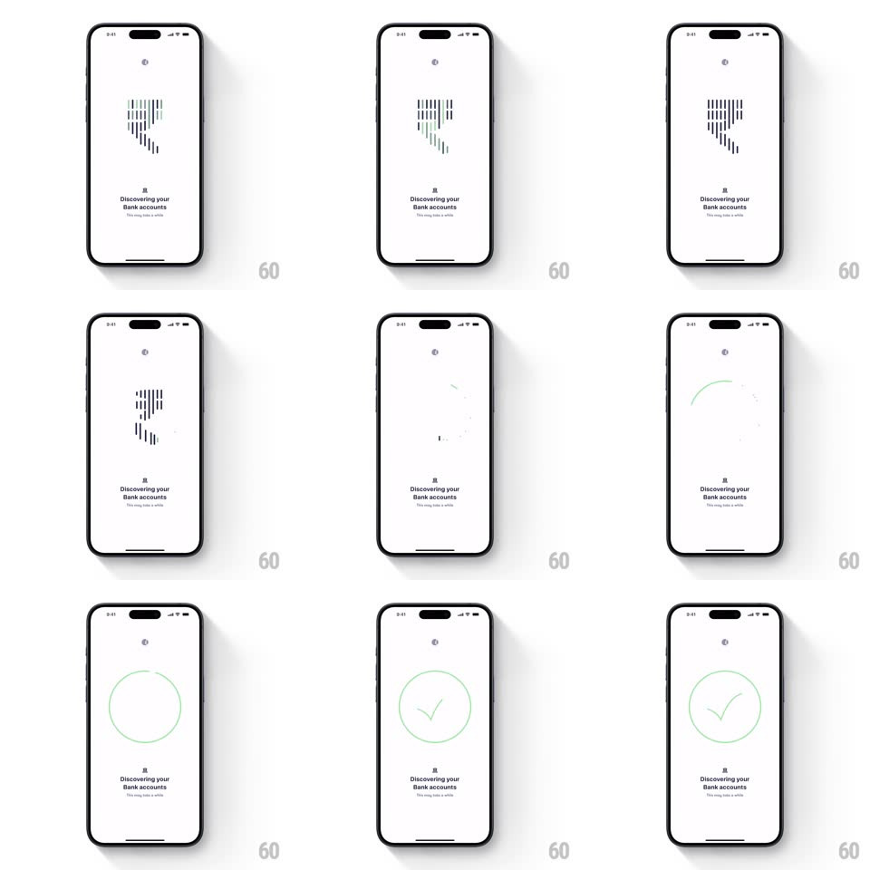

Media
Frame-by-frame

Rebuild this interaction 1:1: Fold's discovery-to-success animation - an abstract shield made of vertical dashed bars pulses while "Discovering your Bank accounts", then the bars explode into drifting particles and resolve into a thin hand-drawn circle with a checkmark.

Rebuild this interaction 1:1: Fold's discovery-to-success animation - an abstract shield made of vertical dashed bars pulses while "Discovering your Bank accounts", then the bars explode into drifting particles and resolve into a thin hand-drawn circle with a checkmark.
## Integration
Integration: stack-agnostic spec - springs given as stiffness/damping, timed motions as duration + curve; map every value to your framework and animation library of choice.
## Scene
White screen, small logo top-center, status text ("Discovering your Bank accounts" + "This may take a while") at bottom. Center: a shield/pin shape built from rows of short vertical black dashes. End state: a thin circle outline with a check inside, faint particle specks around it.
## Motion spec
Pattern: loading glyph explosion into a drawn success mark.
- Loading: the dash rows ripple - each column's bars oscillate in length/opacity in a wave sweeping downward (1.2s loop, 60ms column offset) - the shield breathes.
- On success: the dashes detonate - each dash becomes a particle flung outward along a radial path (600ms, ease-out, random +-15deg spread) with trailing fade, the shield dissolving from the center out.
- Immediately after the burst: the circle draws itself (stroke, 500ms, starts at 12 o'clock, slight wobble like a hand-drawn line) and the check strokes in right after (250ms), both in thin gray-green.
- A few leftover particles drift down slowly (2s, gravity) as the success mark settles with a tiny scale breathe (1 -> 1.03 -> 1).
- Status text crossfades to the success copy as the circle begins.
## Calibration
- The explosion is the transition - no spinner-to-check cut; the loader literally becomes the confetti.
- The drawn line is thin and imperfect - the human wobble is the style.
## Reduced motion
Shield fades; circle and check fade in drawn-state.
## Don't miss
- Particle paths radiate from the shield's own geometry - chaos with a memory of order.
- The check never bounces or pops - it's drawn, then still.